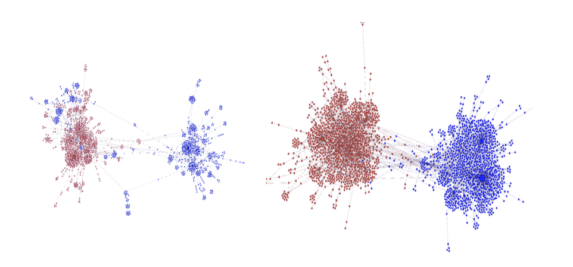

Polarization on Social Media
Tutorial || KDD 2018, WebConf 2018, ICWSM 2017
Abstract
Which topics spark the most heated debates on social media? How do social media users interact when they disagree? Can we nudge them towards constructive disagreement? Answering these questions helps us understand large-scale societal mechanisms - including phenomena such as partisan sharing, echo chambers, and filter bubbles, which might be detrimental to the democratic process. It also allows us to develop tools and techniques that can be used by journalists to understand which issues divide the public; social scientists to understand how polarization is manifested in social interactions; and web users to improve their experience online.
This tutorial presents a systematic review of polarization as manifested online, and in particular on social media. In the beginning, we clarify the concept of polarization and the related nomenclature, drawing from the social and political sciences. Subse- quently, we review algorithmic techniques for detection, quantification, and mitigation of polarization. We conclude the tutorial by presenting open challenges and promising research directions for Web Scientists.
Slides
The slides are available here (Dropbox, 77MB).
For convenience, we also split the slides into different sections:
Part1: Introduction and social theories behind Polarization
Part2: Modeling Polarization
Part3: Measuring Polarization
Part4: Mitigating Polarization
Part5: Counter Findings
Part6: Conclusions
Organizers
Kiran Garimella
Kiran Garimella is a postdoc at EPFL. He recently finished his PhD at Aalto University. His research focuses on identifying and combating filter bubbles on social media. Previously he worked as a Research Engineer at Yahoo Research, QCRI and as an Research Intern at LinkedIn and Amazon. His research on reducing polarization on social media received the best student paper awards at WSDM and WebScience 2017.
Twitter: @gvrkiran
Gianmarco De Francisci Morales
Gianmarco De Francisci Morales is a Scientist at QCRI. Previously he worked as a Visiting Scientist at Aalto University in Helsinki, as a Research Scientist at Yahoo Labs in Barcelona, and as a Research Associate at ISTI-CNR in Pisa. He received his Ph.D. in Computer Science and Engineering from the IMT Institute for Advanced Studies of Lucca in 2012. His research focuses on scalable data mining, with an emphasis on Web mining and data-intensive scalable computing systems. He is an active member of the open source community of the Apache Software Foundation, working on the Hadoop ecosystem, and a committer for the Apache Pig project. He is one of the lead developers of Apache SAMOA, an open-source platform for mining big data streams. He co-organizes the workshop series on Social News on the Web (SNOW), co-located with the WWW conference.
Twitter: @gdfm7
Michael Mathioudakis

Michael Mathioudakis is an assistant professor at the University of Helsinki, and Chair for Algorithmic Data Science at the Helsinki Center for Digital Humanities (HELDIG). Prior to that, he was a Postdoctoral Researcher at Aalto University and received his PhD from the University of Toronto. His research focuses on the analysis of user generated content on social media, with a recent emphasis on online polarization and algorithmnic fairness.
Twitter: @mmathioudakis
Aristides Gionis
Aristides Gionis is a professor in the department of Computer Science in Aalto University. He was a visiting professor in the University of Rome in fall 2016, and a senior research scientist in Yahoo! Research between 2006 and 2012. He is currently serving as an action editor in the Data Management and Knowledge Discovery journal (DMKD), an associate editor in the ACM Transactions on Knowledge Discovery from Data (TKDD), and a managing editor in Internet Mathematics. He has contributed in several areas of data science, such as algorithmic data analysis, web mining, social-media analysis, data clustering, and privacy-preserving data mining. His current research is funded by the Academy of Finland (projects Nestor, Agra, AIDA) and the European Commission (project SoBigData).
Twitter: @gionis
Go to top